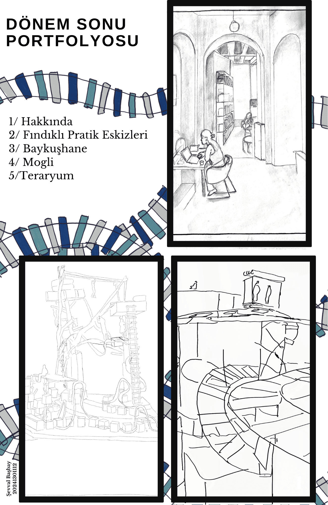
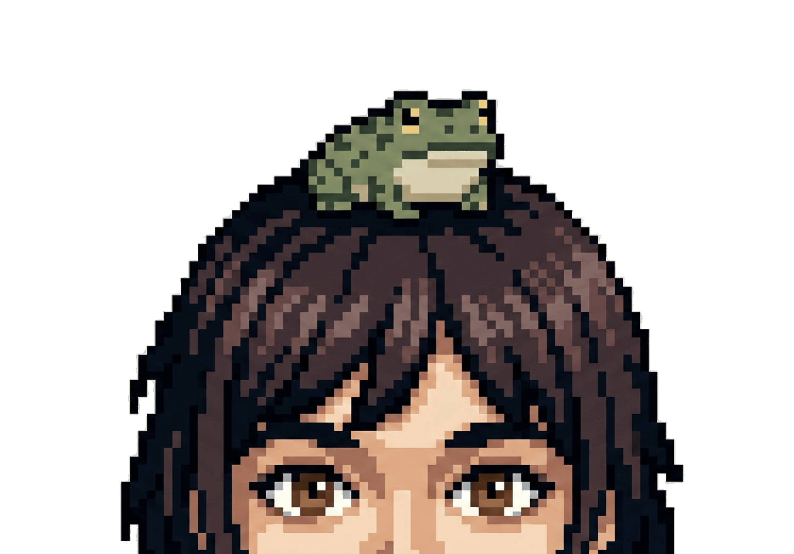

FIRST PORTFOLIO
My first booklet portfolio.

ARCHITECTURAL STUDIES, SHEETS & DIGITAL EXPERIMENTS- ABOUT
Hover to pause. Wanna know more info? Click the froggy. Click each project to open its panel.
A moving archive designed to showcase architectural studies as a continuous sequence rather than a static grid.
Click project cards to open panels. Use the arrows for booklets and click images to enlarge.